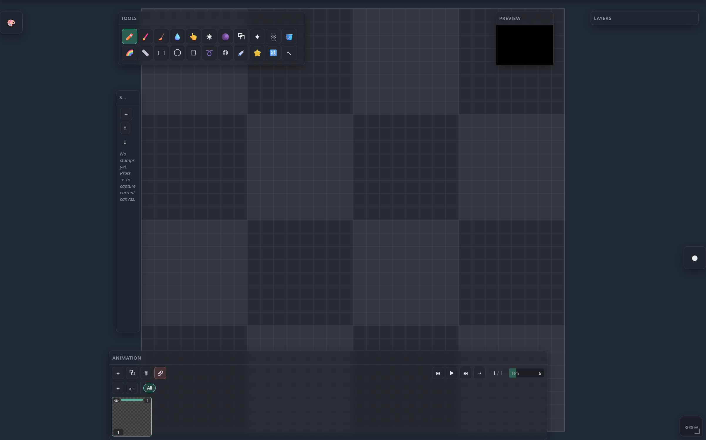
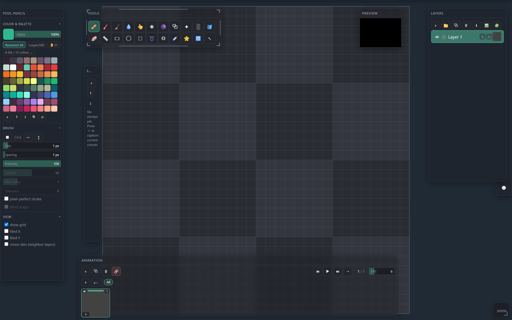
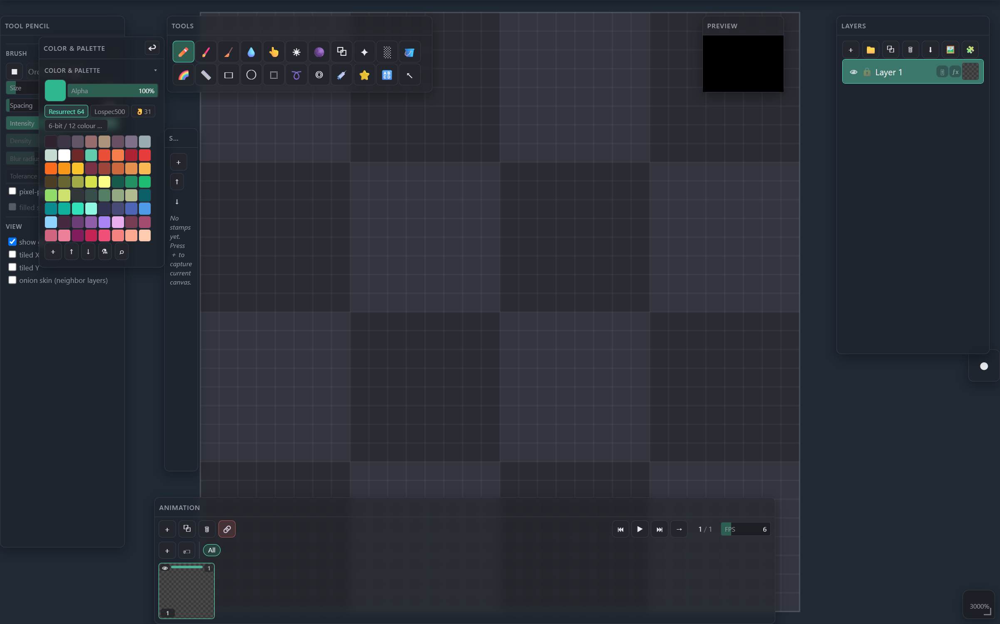
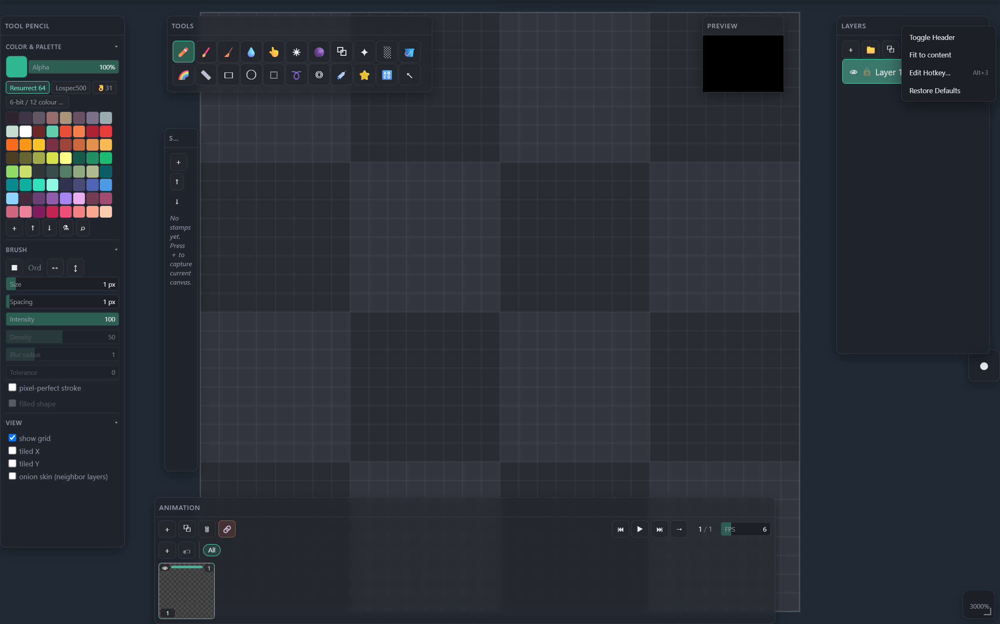
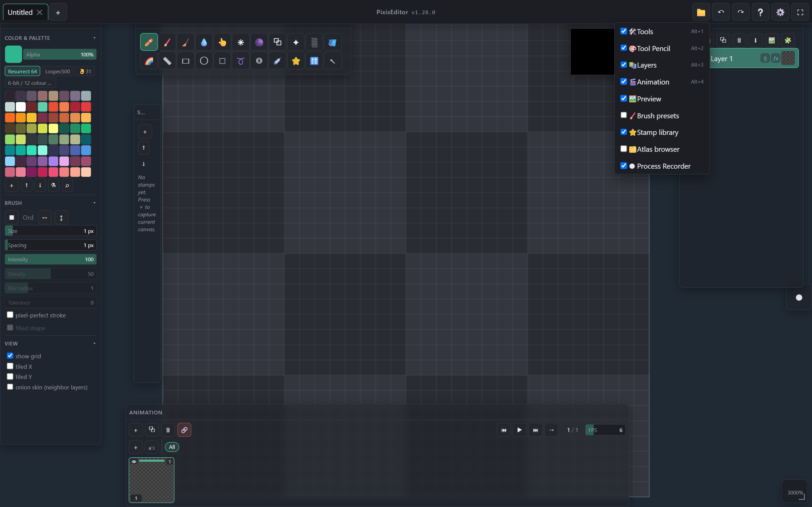

Canvas workflow
Panel Docking
Every panel is a free-floating window, not a fixed dock slot. Drag it anywhere; it magnet-snaps to the work area's edges and to other panels, collapses to a chip or a title strip, and any inner section can be popped out into its own mini window.
← Interface overviewMove & snap
Drag a panel's title bar (or right-drag its body) to reposition it. Nothing is locked to a slot — get within ~12px of the work area's edge or another panel and it snaps flush; anywhere else it can freely overlap.
Tool Settings sits flush against the work area's left edge — that's a magnet snap, not a fixed dock, so it can be dragged off just as easily.
Layers is magnet-snapped to the right edge the same way.
Tools isn't touching any edge — it's just parked wherever it was last left.
Collapse
Click a header without dragging to collapse the panel. Where it lands depends on what it's touching.

Collapsing a panel stuck to the left or right wall shrinks it to a small square icon — click it again to reopen.
Anywhere else — top/bottom edge or mid-canvas — it collapses to a thin title-only bar instead, keeping its horizontal position.
Resize
Every panel has 8 resize zones — 4 edges (one axis) and 4 corners (both axes) — that light up on hover. They snap to the work area's bounds and to neighboring panels' edges, same as a drag-move.

Resizes width and height together, anchored from the opposite corner.
Resizes a single axis — top/bottom for height, left/right for width.
Pop a section into its own window
Sub-sections inside a panel — Color & Palette, Brush, View and the like — can be undocked on their own. Press and hold a section's header; it arms after ~0.4s (turns green) and fully detaches at 3 seconds, or drag while armed to pull it out immediately.

Click the return arrow to send the section back to its parent panel, right where it was pulled from.
Right-click a panel
Right-clicking any panel's header (without dragging) opens per-panel controls.

Hides the title bar to save space. Shift+click applies the same state to every open panel at once.
Trims empty space so the panel matches its content at the current width.
Opens the Hotkey Editor to assign or change this panel's own show/hide chord.
Resets this one panel's position, size, dock and collapsed state back to the app default.
Show or hide any panel
File menu → Panels… lists every panel with a checkbox — the fastest way to bring back something that's been closed.

Animation is currently visible; its accelerator (Alt+4 here) shows whenever one is bound — assign one from the panel's own right-click menu.
Atlas browser is hidden; ticking the box brings it back onto the canvas without hunting for it.
Gestures & shortcuts
- Drag — move (detaches from any snap)
- Click, no drag — collapse / expand
- Right-drag — also moves the panel
- Right-click, no drag — panel context menu
- Click — collapse just that section
- Hold ~0.4s — arms (turns green)
- Hold 3s, or drag once armed — detaches to a free window
- Drag a corner — resize both axes
- Drag an edge — resize one axis
- Both snap to the work area and neighboring panels
Alt+1— ToolsAlt+2— Tool SettingsAlt+3— LayersAlt+4— Animation- Every panel and detached section can get its own chord via Edit Hotkey…